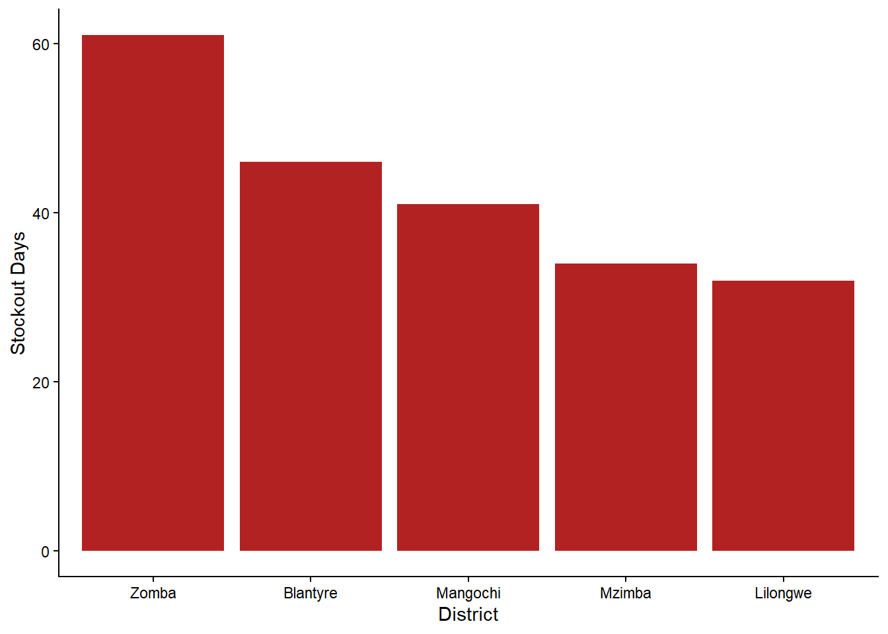
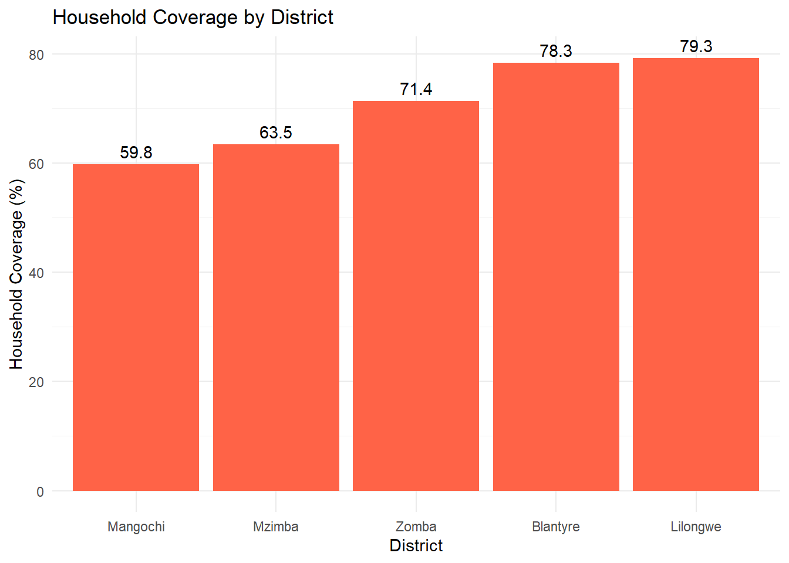
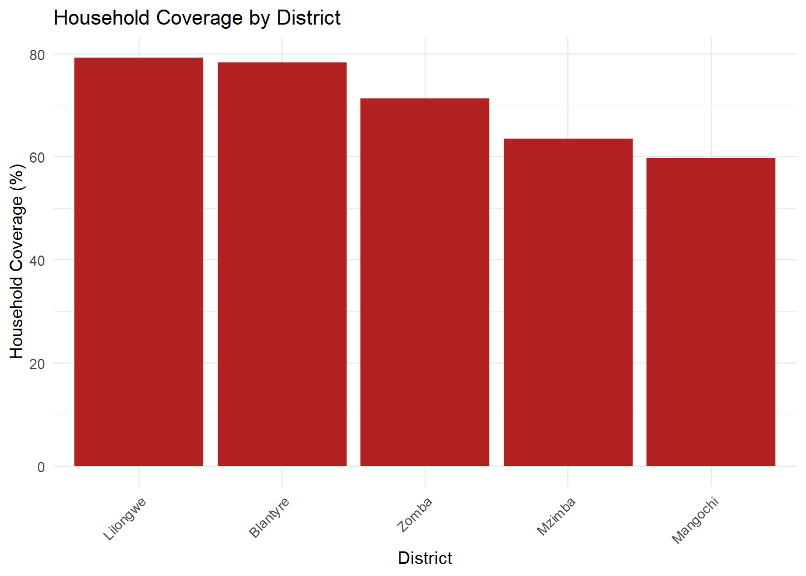
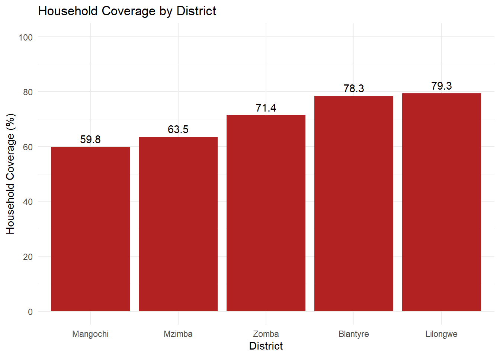
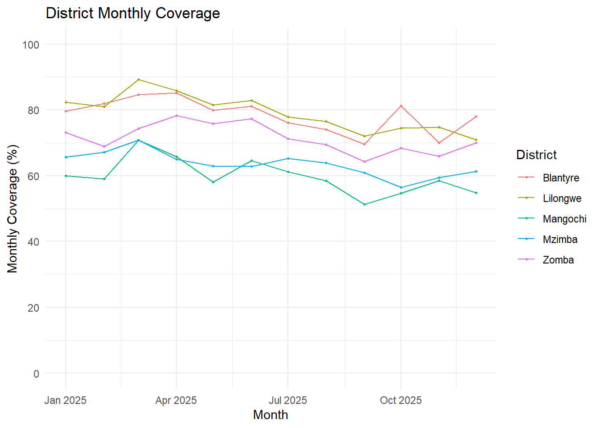
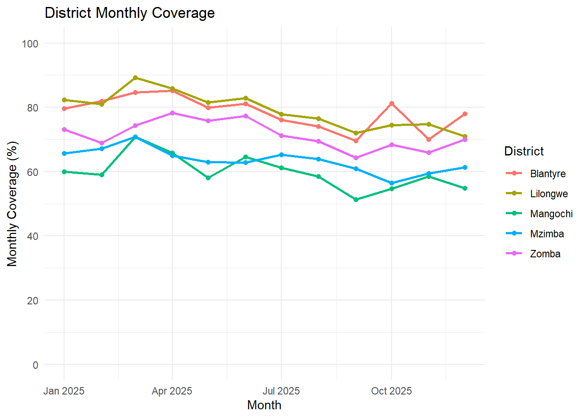
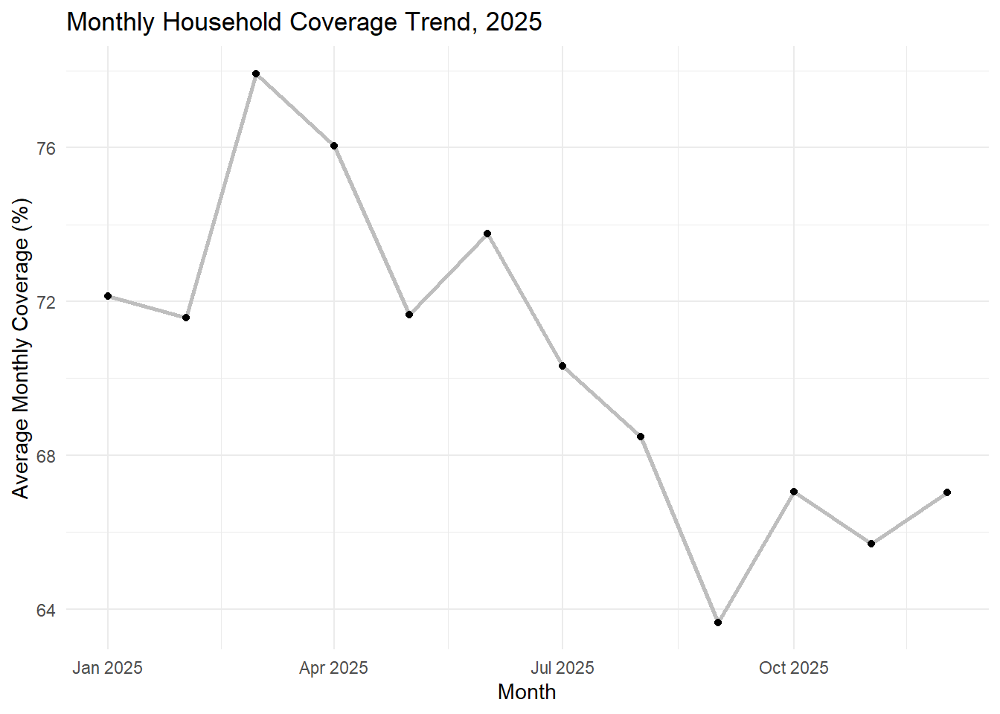

library(tidyverse)10 Small Small Exercise
A practice exercise I made for myself, what what.
Note
This chapter needs the data file data/malawi_health_programme_monitoring.csv in the book’s data folder. If the file isn’t there, the code is shown but not run.
10.1 Loading and inspecting the data
Tell read_csv() which values count as missing:
health_data <- read_csv(
"data/malawi_health_programme_monitoring.csv",
na = c("NA", ".", " ", "")
)glimpse(health_data)Rows: 300
Columns: 9
$ district <chr> "Lilongwe", "Lilongwe", "Lilongwe", "Lilongwe", …
$ chw_id <chr> "LIL_CHW_01", "LIL_CHW_01", "LIL_CHW_01", "LIL_C…
$ month <date> 2025-01-01, 2025-02-01, 2025-03-01, 2025-04-01,…
$ households_targeted <dbl> 52, 46, 54, 52, 55, 52, 46, 52, 43, 60, 39, 47, …
$ households_visited <dbl> 48, 43, 53, 45, 46, 50, 39, 44, 36, 50, 34, 39, …
$ beneficiaries_reached <dbl> 136, 89, 168, 107, 135, 102, 115, 96, 102, 135, …
$ referrals_made <dbl> 4, 7, 4, 5, 3, 4, 4, 4, 5, 7, 1, 4, 2, 3, 9, 3, …
$ group_sessions <dbl> 5, 1, 3, 1, 5, 1, 2, 1, 2, 1, 3, 4, 5, 3, 1, 3, …
$ stockout_days <dbl> 0, 0, 2, 2, 0, 0, 0, 0, 0, 0, 0, 0, 3, 0, 1, 0, …head(health_data)# A tibble: 6 × 9
district chw_id month households_targeted households_visited
<chr> <chr> <date> <dbl> <dbl>
1 Lilongwe LIL_CHW_01 2025-01-01 52 48
2 Lilongwe LIL_CHW_01 2025-02-01 46 43
3 Lilongwe LIL_CHW_01 2025-03-01 54 53
4 Lilongwe LIL_CHW_01 2025-04-01 52 45
5 Lilongwe LIL_CHW_01 2025-05-01 55 46
6 Lilongwe LIL_CHW_01 2025-06-01 52 50
# ℹ 4 more variables: beneficiaries_reached <dbl>, referrals_made <dbl>,
# group_sessions <dbl>, stockout_days <dbl>summary(health_data) district chw_id month households_targeted
Length :300 Length :300 Min. :2025-01-01 Min. :35.00
N.unique : 5 N.unique : 25 1st Qu.:2025-03-24 1st Qu.:41.00
N.blank : 0 N.blank : 0 Median :2025-06-16 Median :47.00
Min.nchar: 5 Min.nchar: 10 Mean :2025-06-16 Mean :47.55
Max.nchar: 8 Max.nchar: 10 3rd Qu.:2025-09-08 3rd Qu.:54.00
Max. :2025-12-01 Max. :60.00
households_visited beneficiaries_reached referrals_made group_sessions
Min. :17.00 Min. : 37.00 Min. :0.000 Min. :0.000
1st Qu.:27.00 1st Qu.: 70.00 1st Qu.:2.000 1st Qu.:1.000
Median :33.00 Median : 83.00 Median :3.000 Median :3.000
Mean :33.49 Mean : 86.86 Mean :2.953 Mean :2.603
3rd Qu.:39.00 3rd Qu.:101.25 3rd Qu.:4.000 3rd Qu.:4.000
Max. :54.00 Max. :168.00 Max. :9.000 Max. :8.000
NAs :4 NAs :3
stockout_days
Min. :0.0000
1st Qu.:0.0000
Median :0.0000
Mean :0.7133
3rd Qu.:1.0000
Max. :4.0000
colnames(health_data)[1] "district" "chw_id" "month"
[4] "households_targeted" "households_visited" "beneficiaries_reached"
[7] "referrals_made" "group_sessions" "stockout_days" nrow(health_data)[1] 300A first plot, of stockout days by district:
ggplot(health_data, aes(reorder(district, -stockout_days), stockout_days)) +
geom_col(fill = "firebrick") +
labs(
x = "District",
y = "Stockout Days"
) +
theme_classic()
10.2 Getting to know the dataset
1. How many rows and columns does the dataset contain?
ncol(health_data)[1] 9nrow(health_data)[1] 300dim(health_data)[1] 300 92. What does each row represent?
Each row is one observation: one community health worker in one month of the year, going around targeting and visiting households and so on.
3. What are the different variables?
str(health_data)spc_tbl_ [300 × 9] (S3: spec_tbl_df/tbl_df/tbl/data.frame)
$ district : chr [1:300] "Lilongwe" "Lilongwe" "Lilongwe" "Lilongwe" ...
$ chw_id : chr [1:300] "LIL_CHW_01" "LIL_CHW_01" "LIL_CHW_01" "LIL_CHW_01" ...
$ month : Date[1:300], format: "2025-01-01" "2025-02-01" ...
$ households_targeted : num [1:300] 52 46 54 52 55 52 46 52 43 60 ...
$ households_visited : num [1:300] 48 43 53 45 46 50 39 44 36 50 ...
$ beneficiaries_reached: num [1:300] 136 89 168 107 135 102 115 96 102 135 ...
$ referrals_made : num [1:300] 4 7 4 5 3 4 4 4 5 7 ...
$ group_sessions : num [1:300] 5 1 3 1 5 1 2 1 2 1 ...
$ stockout_days : num [1:300] 0 0 2 2 0 0 0 0 0 0 ...
- attr(*, "spec")=
.. cols(
.. district = col_character(),
.. chw_id = col_character(),
.. month = col_date(format = ""),
.. households_targeted = col_double(),
.. households_visited = col_double(),
.. beneficiaries_reached = col_double(),
.. referrals_made = col_double(),
.. group_sessions = col_double(),
.. stockout_days = col_double()
.. )
- attr(*, "problems")=<pointer: 0x000001c4867e9de0> 4. Which variables are numerical, and which are categorical?
- Numerical:
households_targeted,households_visited,beneficiaries_reached,referrals_made,group_sessions,stockout_days - Categorical:
district,chw_id monthis a date.
5. Can you identify any missing values?
Yes. I opened the CSV first and tried to spot the missing values by eye, and then loaded it with the na argument shown above. The count of missing values per variable:
colSums(is.na(health_data)) district chw_id month
0 0 0
households_targeted households_visited beneficiaries_reached
0 0 0
referrals_made group_sessions stockout_days
4 3 0 10.3 How many community health workers are there?
health_data |>
distinct(chw_id) |>
count()# A tibble: 1 × 1
n
<int>
1 25or
health_data |>
summarise(n_workers = n_distinct(chw_id))# A tibble: 1 × 1
n_workers
<int>
1 2510.4 A Lilongwe subset
lilongwe_data <- health_data |>
filter(district == "Lilongwe")1. How many rows and columns?
dim(lilongwe_data)[1] 60 92. How many workers?
lilongwe_data |>
distinct(chw_id) |>
count()# A tibble: 1 × 1
n
<int>
1 5or
lilongwe_data |>
summarise(n_workers = n_distinct(chw_id))# A tibble: 1 × 1
n_workers
<int>
1 53. How many months?
lilongwe_data |>
distinct(month) |>
count()# A tibble: 1 × 1
n
<int>
1 1210.5 Choosing columns with select()
lilongwe_performance <- lilongwe_data |>
select(
district,
chw_id,
month,
households_targeted,
households_visited,
beneficiaries_reached
)1. How many rows and columns does the new object have?
dim(lilongwe_performance)[1] 60 62. What happened to the other variables?
The other 3 variables are dropped in the new object by select().
3. Is lilongwe_data still the same?
lilongwe_data# A tibble: 60 × 9
district chw_id month households_targeted households_visited
<chr> <chr> <date> <dbl> <dbl>
1 Lilongwe LIL_CHW_01 2025-01-01 52 48
2 Lilongwe LIL_CHW_01 2025-02-01 46 43
3 Lilongwe LIL_CHW_01 2025-03-01 54 53
4 Lilongwe LIL_CHW_01 2025-04-01 52 45
5 Lilongwe LIL_CHW_01 2025-05-01 55 46
6 Lilongwe LIL_CHW_01 2025-06-01 52 50
7 Lilongwe LIL_CHW_01 2025-07-01 46 39
8 Lilongwe LIL_CHW_01 2025-08-01 52 44
9 Lilongwe LIL_CHW_01 2025-09-01 43 36
10 Lilongwe LIL_CHW_01 2025-10-01 60 50
# ℹ 50 more rows
# ℹ 4 more variables: beneficiaries_reached <dbl>, referrals_made <dbl>,
# group_sessions <dbl>, stockout_days <dbl>Yes, all 9 variables are still there, since that object wasn’t altered.
lilongwe_performance# A tibble: 60 × 6
district chw_id month households_targeted households_visited
<chr> <chr> <date> <dbl> <dbl>
1 Lilongwe LIL_CHW_01 2025-01-01 52 48
2 Lilongwe LIL_CHW_01 2025-02-01 46 43
3 Lilongwe LIL_CHW_01 2025-03-01 54 53
4 Lilongwe LIL_CHW_01 2025-04-01 52 45
5 Lilongwe LIL_CHW_01 2025-05-01 55 46
6 Lilongwe LIL_CHW_01 2025-06-01 52 50
7 Lilongwe LIL_CHW_01 2025-07-01 46 39
8 Lilongwe LIL_CHW_01 2025-08-01 52 44
9 Lilongwe LIL_CHW_01 2025-09-01 43 36
10 Lilongwe LIL_CHW_01 2025-10-01 60 50
# ℹ 50 more rows
# ℹ 1 more variable: beneficiaries_reached <dbl>10.6 Ranking with arrange()
lilongwe_ranked <- lilongwe_performance |>
arrange(desc(beneficiaries_reached))
lilongwe_ranked# A tibble: 60 × 6
district chw_id month households_targeted households_visited
<chr> <chr> <date> <dbl> <dbl>
1 Lilongwe LIL_CHW_01 2025-03-01 54 53
2 Lilongwe LIL_CHW_02 2025-04-01 59 51
3 Lilongwe LIL_CHW_03 2025-05-01 51 47
4 Lilongwe LIL_CHW_01 2025-01-01 52 48
5 Lilongwe LIL_CHW_01 2025-05-01 55 46
6 Lilongwe LIL_CHW_01 2025-10-01 60 50
7 Lilongwe LIL_CHW_05 2025-04-01 54 43
8 Lilongwe LIL_CHW_02 2025-05-01 60 49
9 Lilongwe LIL_CHW_01 2025-12-01 47 39
10 Lilongwe LIL_CHW_03 2025-06-01 53 48
# ℹ 50 more rows
# ℹ 1 more variable: beneficiaries_reached <dbl>- The worker with the most beneficiaries reached is
LIL_CHW_01. - That was in the month 2025-03-01.
- The number reached was 168.
The same answer with slice_max():
lilongwe_performance |>
slice_max(beneficiaries_reached, n = 1)# A tibble: 1 × 6
district chw_id month households_targeted households_visited
<chr> <chr> <date> <dbl> <dbl>
1 Lilongwe LIL_CHW_01 2025-03-01 54 53
# ℹ 1 more variable: beneficiaries_reached <dbl>10.7 Creating new variables with mutate()
lilongwe_coverage <- lilongwe_performance |>
mutate(coverage_rate = households_visited / households_targeted * 100)
lilongwe_coverage# A tibble: 60 × 7
district chw_id month households_targeted households_visited
<chr> <chr> <date> <dbl> <dbl>
1 Lilongwe LIL_CHW_01 2025-01-01 52 48
2 Lilongwe LIL_CHW_01 2025-02-01 46 43
3 Lilongwe LIL_CHW_01 2025-03-01 54 53
4 Lilongwe LIL_CHW_01 2025-04-01 52 45
5 Lilongwe LIL_CHW_01 2025-05-01 55 46
6 Lilongwe LIL_CHW_01 2025-06-01 52 50
7 Lilongwe LIL_CHW_01 2025-07-01 46 39
8 Lilongwe LIL_CHW_01 2025-08-01 52 44
9 Lilongwe LIL_CHW_01 2025-09-01 43 36
10 Lilongwe LIL_CHW_01 2025-10-01 60 50
# ℹ 50 more rows
# ℹ 2 more variables: beneficiaries_reached <dbl>, coverage_rate <dbl>1. What is the coverage rate for LIL_CHW_01 in January 2025?
lilongwe_coverage |>
filter(chw_id == "LIL_CHW_01")# A tibble: 12 × 7
district chw_id month households_targeted households_visited
<chr> <chr> <date> <dbl> <dbl>
1 Lilongwe LIL_CHW_01 2025-01-01 52 48
2 Lilongwe LIL_CHW_01 2025-02-01 46 43
3 Lilongwe LIL_CHW_01 2025-03-01 54 53
4 Lilongwe LIL_CHW_01 2025-04-01 52 45
5 Lilongwe LIL_CHW_01 2025-05-01 55 46
6 Lilongwe LIL_CHW_01 2025-06-01 52 50
7 Lilongwe LIL_CHW_01 2025-07-01 46 39
8 Lilongwe LIL_CHW_01 2025-08-01 52 44
9 Lilongwe LIL_CHW_01 2025-09-01 43 36
10 Lilongwe LIL_CHW_01 2025-10-01 60 50
11 Lilongwe LIL_CHW_01 2025-11-01 39 34
12 Lilongwe LIL_CHW_01 2025-12-01 47 39
# ℹ 2 more variables: beneficiaries_reached <dbl>, coverage_rate <dbl>lilongwe_coverage |>
filter(
chw_id == "LIL_CHW_01",
month == "2025-01-01"
)# A tibble: 1 × 7
district chw_id month households_targeted households_visited
<chr> <chr> <date> <dbl> <dbl>
1 Lilongwe LIL_CHW_01 2025-01-01 52 48
# ℹ 2 more variables: beneficiaries_reached <dbl>, coverage_rate <dbl>The coverage rate is 92.3%.
2. Which observation has the highest coverage rate?
lilongwe_coverage |>
slice_max(coverage_rate, n = 1)# A tibble: 1 × 7
district chw_id month households_targeted households_visited
<chr> <chr> <date> <dbl> <dbl>
1 Lilongwe LIL_CHW_01 2025-03-01 54 53
# ℹ 2 more variables: beneficiaries_reached <dbl>, coverage_rate <dbl>3. What does a coverage rate of 100% mean in programme monitoring?
It means that all the households targeted during that monitoring period were visited.
10.8 Grouping and summarising
With group_by() and summarise():
worker_summary <- lilongwe_coverage |>
group_by(chw_id) |>
summarise(
total_beneficiaries_reached = sum(beneficiaries_reached),
total_households_visited = sum(households_visited),
total_households_targeted = sum(households_targeted)
)Or you can use .by:
worker_summary <- lilongwe_coverage |>
summarise(
total_beneficiaries_reached = sum(beneficiaries_reached),
total_households_visited = sum(households_visited),
total_households_targeted = sum(households_targeted),
.by = chw_id
)
worker_summary# A tibble: 5 × 4
chw_id total_beneficiaries_…¹ total_households_vis…² total_households_tar…³
<chr> <dbl> <dbl> <dbl>
1 LIL_CHW_… 1382 527 598
2 LIL_CHW_… 1163 450 581
3 LIL_CHW_… 1216 467 571
4 LIL_CHW_… 1045 403 554
5 LIL_CHW_… 1210 484 636
# ℹ abbreviated names: ¹total_beneficiaries_reached, ²total_households_visited,
# ³total_households_targetedWhat’s the difference between these two questions?
- How many beneficiaries did
LIL_CHW_01reach in January?
lilongwe_coverage |>
filter(
chw_id == "LIL_CHW_01",
month == "2025-01-01"
)# A tibble: 1 × 7
district chw_id month households_targeted households_visited
<chr> <chr> <date> <dbl> <dbl>
1 Lilongwe LIL_CHW_01 2025-01-01 52 48
# ℹ 2 more variables: beneficiaries_reached <dbl>, coverage_rate <dbl>The answer is 135.
- How many beneficiaries did
LIL_CHW_01reach throughout the entire year?
The answer is 1,382. The first question looks at one row (one month), and the second adds up all twelve months.
Average monthly figures per worker:
worker_averages <- lilongwe_coverage |>
summarise(
avg_monthly_beneficiaries_reached = mean(beneficiaries_reached),
avg_monthly_households_visited = mean(households_visited),
avg_monthly_households_targeted = mean(households_targeted),
.by = chw_id
)
worker_averages# A tibble: 5 × 4
chw_id avg_monthly_benefici…¹ avg_monthly_househol…² avg_monthly_househol…³
<chr> <dbl> <dbl> <dbl>
1 LIL_CHW_… 115. 43.9 49.8
2 LIL_CHW_… 96.9 37.5 48.4
3 LIL_CHW_… 101. 38.9 47.6
4 LIL_CHW_… 87.1 33.6 46.2
5 LIL_CHW_… 101. 40.3 53
# ℹ abbreviated names: ¹avg_monthly_beneficiaries_reached,
# ²avg_monthly_households_visited, ³avg_monthly_households_targetedWhich worker has the highest and lowest average monthly beneficiary reach?
worker_averages |>
arrange(desc(avg_monthly_beneficiaries_reached))# A tibble: 5 × 4
chw_id avg_monthly_benefici…¹ avg_monthly_househol…² avg_monthly_househol…³
<chr> <dbl> <dbl> <dbl>
1 LIL_CHW_… 115. 43.9 49.8
2 LIL_CHW_… 101. 38.9 47.6
3 LIL_CHW_… 101. 40.3 53
4 LIL_CHW_… 96.9 37.5 48.4
5 LIL_CHW_… 87.1 33.6 46.2
# ℹ abbreviated names: ¹avg_monthly_beneficiaries_reached,
# ²avg_monthly_households_visited, ³avg_monthly_households_targetedLIL_CHW_01 has the most and LIL_CHW_04 has the least.
10.9 Counting and comparing districts
district_summary <- health_data |>
summarise(
total_workers = n_distinct(chw_id),
total_beneficiaries_reached = sum(beneficiaries_reached),
total_households_visited = sum(households_visited),
total_households_targeted = sum(households_targeted),
.by = district
)
district_summary# A tibble: 5 × 5
district total_workers total_beneficiaries_reached total_households_visited
<chr> <int> <dbl> <dbl>
1 Lilongwe 5 6016 2331
2 Blantyre 5 5620 2171
3 Mzimba 5 4640 1813
4 Zomba 5 5249 1991
5 Mangochi 5 4532 1741
# ℹ 1 more variable: total_households_targeted <dbl>Which district has the highest total beneficiary reach?
district_summary |>
arrange(desc(total_beneficiaries_reached))# A tibble: 5 × 5
district total_workers total_beneficiaries_reached total_households_visited
<chr> <int> <dbl> <dbl>
1 Lilongwe 5 6016 2331
2 Blantyre 5 5620 2171
3 Zomba 5 5249 1991
4 Mzimba 5 4640 1813
5 Mangochi 5 4532 1741
# ℹ 1 more variable: total_households_targeted <dbl>Which district has the lowest?
district_summary |>
arrange(total_beneficiaries_reached)# A tibble: 5 × 5
district total_workers total_beneficiaries_reached total_households_visited
<chr> <int> <dbl> <dbl>
1 Mangochi 5 4532 1741
2 Mzimba 5 4640 1813
3 Zomba 5 5249 1991
4 Blantyre 5 5620 2171
5 Lilongwe 5 6016 2331
# ℹ 1 more variable: total_households_targeted <dbl>Do all five districts have the same number of community health workers?
Numerically, yes. But in reality, no. For instance, Mangochi has a large number of targeted households (2,909), but those actually reached are fewer (1,741), meaning less coverage.
What might explain differences in total beneficiaries reached between districts?
Some districts are fairly large for just 5 workers. They could have a lot of work and large grounds to cover.
10.10 District coverage rates
district_performance <- district_summary |>
mutate(
coverage_rate = total_households_visited / total_households_targeted * 100
) |>
arrange(desc(coverage_rate))
district_performance# A tibble: 5 × 6
district total_workers total_beneficiaries_reached total_households_visited
<chr> <int> <dbl> <dbl>
1 Lilongwe 5 6016 2331
2 Blantyre 5 5620 2171
3 Zomba 5 5249 1991
4 Mzimba 5 4640 1813
5 Mangochi 5 4532 1741
# ℹ 2 more variables: total_households_targeted <dbl>, coverage_rate <dbl>Which district has the highest household coverage rate?
Lilongwe, with 79.3%.
Which has the lowest?
Mangochi, with 59.8%.
Is Mangochi necessarily the worst-performing district?
All the numbers say so, but there could be underlying issues.
Why is coverage rate a more useful comparison than total beneficiaries reached when assessing household visitation performance?
Total households visited is an absolute measure. Coverage rate is a relative measure: it takes into account how many households each district was supposed to visit.
10.11 Missing values and data quality
colSums(is.na(health_data)) district chw_id month
0 0 0
households_targeted households_visited beneficiaries_reached
0 0 0
referrals_made group_sessions stockout_days
4 3 0 Which variables contain missing values?
group_sessions and referrals_made.
How many missing values does each variable have?
3 and 4 (the output above shows which is which).
How many missing values are there altogether?
sum(is.na(health_data))[1] 7There are 7.
Knowing that referrals_made has missing values is useful, but we also want to know which records are incomplete.
Which community health workers are associated with the missing referral records?
health_data |>
filter(is.na(referrals_made)) |>
distinct(chw_id)# A tibble: 4 × 1
chw_id
<chr>
1 MZI_CHW_02
2 MZI_CHW_03
3 ZOM_CHW_02
4 ZOM_CHW_03Which districts have missing referral records?
health_data |>
filter(is.na(referrals_made)) |>
distinct(district)# A tibble: 2 × 1
district
<chr>
1 Mzimba
2 Zomba Which months are affected?
health_data |>
filter(is.na(referrals_made)) |>
distinct(month)# A tibble: 4 × 1
month
<date>
1 2025-03-01
2 2025-06-01
3 2025-10-01
4 2025-04-01All three together:
health_data |>
filter(is.na(referrals_made)) |>
distinct(district, chw_id, month)# A tibble: 4 × 3
district chw_id month
<chr> <chr> <date>
1 Mzimba MZI_CHW_02 2025-03-01
2 Mzimba MZI_CHW_03 2025-06-01
3 Zomba ZOM_CHW_02 2025-10-01
4 Zomba ZOM_CHW_03 2025-04-0110.12 Plotting district coverage
district_performance# A tibble: 5 × 6
district total_workers total_beneficiaries_reached total_households_visited
<chr> <int> <dbl> <dbl>
1 Lilongwe 5 6016 2331
2 Blantyre 5 5620 2171
3 Zomba 5 5249 1991
4 Mzimba 5 4640 1813
5 Mangochi 5 4532 1741
# ℹ 2 more variables: total_households_targeted <dbl>, coverage_rate <dbl>A bar chart of household coverage by district, with labels:
ggplot(
district_performance,
aes(reorder(district, coverage_rate), coverage_rate)
) +
geom_col(fill = "tomato") +
labs(
title = "Household Coverage by District",
y = "Household Coverage (%)",
x = "District"
) +
geom_text(
aes(label = round(coverage_rate, digits = 1)),
vjust = -0.5
) +
theme_minimal()
In descending order, with the district names tilted in case they overlap:
ggplot(
district_performance,
aes(x = reorder(district, -coverage_rate), y = coverage_rate)
) +
geom_col(fill = "firebrick") +
labs(
title = "Household Coverage by District",
y = "Household Coverage (%)",
x = "District"
) +
theme_minimal() +
theme(axis.text.x = element_text(angle = 45, hjust = 1))
With the y-axis fixed from 0 to 100, so the bars aren’t exaggerated:
ggplot(
district_performance,
aes(reorder(district, coverage_rate), coverage_rate)
) +
geom_col(fill = "firebrick") +
labs(
title = "Household Coverage by District",
y = "Household Coverage (%)",
x = "District"
) +
geom_text(
aes(label = round(coverage_rate, digits = 1)),
vjust = -0.5
) +
scale_y_continuous(
limits = c(0, 100),
breaks = seq(0, 100, by = 20)
) +
theme_minimal()
10.13 Coverage over time
How has household coverage changed over the 12 months of 2025 in each district?
monthly_district_performance <- health_data |>
group_by(district, month) |>
summarise(
total_workers = n_distinct(chw_id),
total_beneficiaries_reached = sum(beneficiaries_reached),
total_households_visited = sum(households_visited),
total_households_targeted = sum(households_targeted),
.groups = "drop"
) |>
mutate(
monthly_coverage = total_households_visited / total_households_targeted * 100
)Checking that the result is ungrouped (because of .groups = "drop"):
is_grouped_df(monthly_district_performance)[1] FALSEdim(monthly_district_performance)[1] 60 7head(monthly_district_performance)# A tibble: 6 × 7
district month total_workers total_beneficiaries_reached
<chr> <date> <int> <dbl>
1 Blantyre 2025-01-01 5 484
2 Blantyre 2025-02-01 5 436
3 Blantyre 2025-03-01 5 482
4 Blantyre 2025-04-01 5 444
5 Blantyre 2025-05-01 5 486
6 Blantyre 2025-06-01 5 505
# ℹ 3 more variables: total_households_visited <dbl>,
# total_households_targeted <dbl>, monthly_coverage <dbl>ggplot(
monthly_district_performance,
aes(month, monthly_coverage, colour = district)
) +
geom_line(aes(group = district)) +
geom_point(size = 0.5) +
scale_y_continuous(limits = c(0, 100), breaks = seq(0, 100, by = 20)) +
labs(
title = "District Monthly Coverage",
y = "Monthly Coverage (%)",
x = "Month",
colour = "District"
) +
theme_minimal()
The same plot with thicker lines and bigger points, which is easier to read:
ggplot(
monthly_district_performance,
aes(month, monthly_coverage, colour = district)
) +
geom_line(aes(group = district), linewidth = 1) +
geom_point(size = 1.6) +
scale_y_continuous(limits = c(0, 100), breaks = seq(0, 100, by = 20)) +
labs(
title = "District Monthly Coverage",
y = "Monthly Coverage (%)",
x = "Month",
colour = "District"
) +
theme_minimal()
monthly_district_performance# A tibble: 60 × 7
district month total_workers total_beneficiaries_reached
<chr> <date> <int> <dbl>
1 Blantyre 2025-01-01 5 484
2 Blantyre 2025-02-01 5 436
3 Blantyre 2025-03-01 5 482
4 Blantyre 2025-04-01 5 444
5 Blantyre 2025-05-01 5 486
6 Blantyre 2025-06-01 5 505
7 Blantyre 2025-07-01 5 429
8 Blantyre 2025-08-01 5 499
9 Blantyre 2025-09-01 5 369
10 Blantyre 2025-10-01 5 624
# ℹ 50 more rows
# ℹ 3 more variables: total_households_visited <dbl>,
# total_households_targeted <dbl>, monthly_coverage <dbl>My observations:
- Overall, Blantyre seems to have the best monthly coverage, even though it does lose out to Lilongwe over the final couple of months.
- Mangochi has the lowest of the five districts.
- For some reason, approximately between the months of April and August, all districts show a dip in their monthly coverage. The data doesn’t say why, so I can’t speculate.
10.14 The overall monthly trend
A summary showing the average monthly coverage across all five districts, from January to December:
monthly_district_performance |>
summarise(
average_monthly_coverage = mean(monthly_coverage),
.by = month
)# A tibble: 12 × 2
month average_monthly_coverage
<date> <dbl>
1 2025-01-01 72.1
2 2025-02-01 71.6
3 2025-03-01 77.9
4 2025-04-01 76.0
5 2025-05-01 71.6
6 2025-06-01 73.8
7 2025-07-01 70.3
8 2025-08-01 68.5
9 2025-09-01 63.7
10 2025-10-01 67.0
11 2025-11-01 65.7
12 2025-12-01 67.0overall_monthly_performance <- monthly_district_performance |>
summarise(
average_monthly_coverage = mean(monthly_coverage),
.by = month
)ggplot(
overall_monthly_performance,
aes(month, average_monthly_coverage)
) +
geom_line(linewidth = 1, colour = "grey") +
geom_point() +
theme_minimal() +
labs(
title = "Monthly Household Coverage Trend, 2025",
y = "Average Monthly Coverage (%)",
x = "Month"
)
The weighted overall monthly coverage, calculated from monthly_district_performance:
monthly_district_performance |>
group_by(month) |>
summarise(
total_targeted = sum(total_households_targeted),
total_visited = sum(total_households_visited),
overall_coverage = total_visited / total_targeted * 100
)# A tibble: 12 × 4
month total_targeted total_visited overall_coverage
<date> <dbl> <dbl> <dbl>
1 2025-01-01 1213 879 72.5
2 2025-02-01 1134 810 71.4
3 2025-03-01 1191 927 77.8
4 2025-04-01 1173 890 75.9
5 2025-05-01 1218 873 71.7
6 2025-06-01 1200 882 73.5
7 2025-07-01 1191 835 70.1
8 2025-08-01 1260 859 68.2
9 2025-09-01 1240 791 63.8
10 2025-10-01 1217 822 67.5
11 2025-11-01 1123 735 65.4
12 2025-12-01 1105 744 67.310.15 Data quality checks
Households visited should never be more than households targeted:
health_data |>
filter(households_visited > households_targeted)# A tibble: 0 × 9
# ℹ 9 variables: district <chr>, chw_id <chr>, month <date>,
# households_targeted <dbl>, households_visited <dbl>,
# beneficiaries_reached <dbl>, referrals_made <dbl>, group_sessions <dbl>,
# stockout_days <dbl>Beneficiaries reached should never be negative:
health_data |>
filter(beneficiaries_reached < 0)# A tibble: 0 × 9
# ℹ 9 variables: district <chr>, chw_id <chr>, month <date>,
# households_targeted <dbl>, households_visited <dbl>,
# beneficiaries_reached <dbl>, referrals_made <dbl>, group_sessions <dbl>,
# stockout_days <dbl>Stockout days can’t be more than the number of days in the month:
health_data |>
filter(stockout_days > days_in_month(month))# A tibble: 0 × 9
# ℹ 9 variables: district <chr>, chw_id <chr>, month <date>,
# households_targeted <dbl>, households_visited <dbl>,
# beneficiaries_reached <dbl>, referrals_made <dbl>, group_sessions <dbl>,
# stockout_days <dbl>And which records had any stockout days at all:
health_data |>
filter(stockout_days > 0)# A tibble: 96 × 9
district chw_id month households_targeted households_visited
<chr> <chr> <date> <dbl> <dbl>
1 Lilongwe LIL_CHW_01 2025-03-01 54 53
2 Lilongwe LIL_CHW_01 2025-04-01 52 45
3 Lilongwe LIL_CHW_02 2025-01-01 42 36
4 Lilongwe LIL_CHW_02 2025-03-01 60 53
5 Lilongwe LIL_CHW_02 2025-05-01 60 49
6 Lilongwe LIL_CHW_02 2025-06-01 55 37
7 Lilongwe LIL_CHW_03 2025-01-01 59 45
8 Lilongwe LIL_CHW_03 2025-07-01 53 41
9 Lilongwe LIL_CHW_03 2025-09-01 47 34
10 Lilongwe LIL_CHW_04 2025-06-01 35 30
# ℹ 86 more rows
# ℹ 4 more variables: beneficiaries_reached <dbl>, referrals_made <dbl>,
# group_sessions <dbl>, stockout_days <dbl>